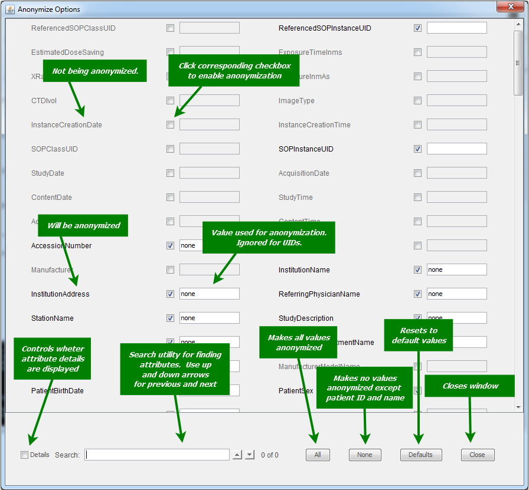

The Anonymize Options ... button near the top of the main
window opens the window shown below:

Attributes are only added to this list when they are encountered by
loading a file. (more info), so if this window
is viewed before loading files, it will be empty.
If an attribute is encountered multiple times within the same file, it will
be anonymized with the same value. The anonymization value for UIDs (eg: SOPInstanceUID)
is ignored, and instead a new UID is generated.
The purpose of this screen is to give the user more control over what
is anonymized and the values used. In particular, if the user notes
that some fields unexpectedly contain title='PHI : Protected Health Information'>PHI
that should be anonymized, then that field may be marked for anonymization.
Changes made on this screen are only valid for the current program session.
The default list of DICOM attributes to be anonymized was derived from
the DICOM 2011 standard. In general, information that identifies the
patient, physicians, and treatment location are anonymized. The list
is defined in the configuration file.